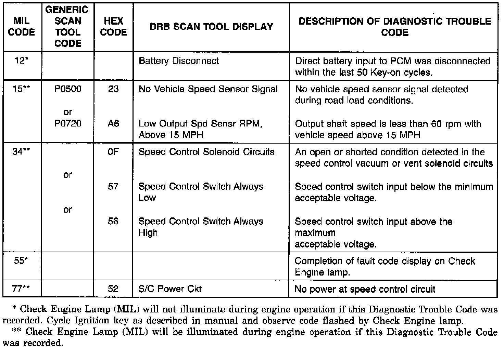

On-Board Diagnostics Test For Speed Control System
Speed Control System Diagnostic Trouble Code Descriptions:

The Powertrain Control Module (PCM) monitors critical input and output circuits of the speed control system, making sure they are operational. A Diagnostic Trouble Code (DTC) is assigned to each input and output circuit monitored by the On-Board Diagnostic (OBD) system. Some circuits are checked continuously and some are checked only under certain conditions.
If the OBD system senses that a monitored circuit is bad, it will put a DTC into electronic memory The DTC will stay in electronic memory as long as the circuit continues to be bad. The PCM is programmed to clear the DTC's from memory after 40 engine warm-up cycles if the problem does not occur again. The DRB scan tool may also be used to erase a DTC.
Diagnostic trouble codes are the results of a system or circuit failure, but do not directly identify the failed component or components.
DIAGNOSTIC TROUBLE CODES
The technician can display a DTC in three different ways:
- a two-digit number flashed on the Malfunction Indicator (Check Engine) Lamp
- a two-digit number displayed on the vehicle odometer
- a description of the DTC can be read using the DRB scan tool
Refer to the Speed Control System Diagnostic Trouble Code chart for DTC's which apply to the speed control system. Refer to the Powertrain Management/Computers and Control Systems/Testing and Inspection/Diagnostic Charts Procedures and DRB scan tool to diagnose an on-board diagnostic system trouble code.
OBTAINING DIAGNOSTIC TROUBLE CODES
Using DRB Scan Tool
WARNING: APPLY PARKING BRAKE AND/OR BLOCK WHEELS BEFORE PERFORMING ANY TEST ON AN OPERATING ENGINE.
1. Connect the DRB scan tool to the 16-way data link (diagnostic) connector. This connector is located in the passenger compartment, below and to the left of steering column.
2. Turn the ignition switch on, access Read Fault Screen. Record all the DTC's shown on the DRB scan tool. Observe the malfunction indicator (check engine) lamp on the instrument panel. The lamp should light for 2 seconds then go out (bulb check).
3. To erase DTC's, use the Erase Trouble Code data screen on the DRB scan tool.
Using The Malfunction Indicator Lamp (MIL)
1. Cycle the ignition key On-Off-On-Off-On within 5 seconds.
2. Count the number of times the MIL (check engine lamp) on the instrument panel flashes on and off. The number of flashes represents the trouble code. There is a slight pause between the flashes representing the first and second digits of the code. Longer pauses separate individual two digit trouble codes. An example of a flashed DTC is as follows:
3. Lamp flashes 1 time, pauses, and then flashes 5 more times. This indicates a DTC code number 15.
4. Lamp flashes 5 times, pauses, and flashes 5 more times. This indicates a DTC code number 55. A DTC 55 will always be the last code to be displayed. This indicates the end of all stored codes.
5. To erase DTC's, use the Erase Trouble Code data screen on the DRB scan tool.
Using The Vehicle Odometer
1. Cycle the ignition key On-Off-On-Off-On within 5 seconds.
2. After a short pause, the mileage shown on the vehicles digital odometer will be temporarily deleted. After this occurs, read the DTC number displayed on the odometer. Each two digit number will be displayed with a slight delay between numbers.
3. A DTC number 55 will always be the last code to be displayed. This indicates the end of all stored codes. After code 55 has been displayed, the odometer will return to its normal mode.
4. To erase DTC's, use the Erase Trouble Code data screen on the DRB scan tool.